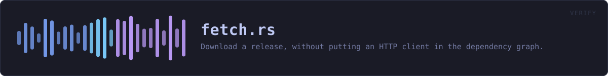

crates/veilvoice-verify/src/fetch.rs
veilvoice-verify · 329 lines · read the source here · or on GitHub
Download a release, without putting an HTTP client in the dependency graph.
The constraint this is written around
VeilVoice is offline by construction, and that is not a slogan: a CI job fails the build if reqwest, hyper, curl, ureq, tungstenite, isahc or surf appears anywhere in cargo tree. The claim on the front page -- "no network code in the dependency graph" -- is one a reader can check in ten seconds, and it is a large part of why this project is worth trusting.
Fetching a release to check it is a genuinely useful thing for this binary to do, and it is also the one thing that claim forbids. So the download is done by the tool the operating system already ships, invoked as a subprocess:
| Platform | Used | Already present because | |---|---|---| | Windows 10+ | curl.exe | shipped in System32 since 2018 | | macOS | curl | part of the base system | | Linux, BSD | curl, else wget | one or the other is on essentially every install |
cargo tree stays exactly as clean as it was, the CI job that enforces it is untouched, and nothing in the library crates gained the ability to talk to anything. What changed is that one command-line tool, whose entire purpose is checking downloads, can now also make one -- when asked, never on its own.
This is the same pattern the rest of the project already uses for platform work it will not link a dependency for: veilvoice-watch reads the registry through reg query, and veilvoice-guard reads the event log through wevtutil.
What is deliberately not done here
No downloader is resolved by bare name. Finding curl by searching PATH on Windows includes the current directory, so running this from a folder containing a hostile curl.exe would run that instead -- finding F-13, in the one program whose job is deciding whether a download is genuine. Absolute paths are tried first, and a bare name is only ever a last resort on platforms where the search order does not include the working directory.
Nothing is fetched implicitly. A download happens because the user passed a subcommand that says so. There is no update check, no telemetry, and no "just in case" request.
Only one host is ever contacted, and it is compiled in. A URL cannot be supplied on the command line, so this cannot be turned into a general downloader by an argument.
In plain words
Downloads a release, without VeilVoice containing any networking code.
It asks the tool your system already has to do the fetching. That is what keeps a real promise the rest of the project makes: there is no HTTP client anywhere in what VeilVoice is built from, which you can check yourself, and this is the one command that touches the network at all.
WHAT THIS FILE CONTAINS
329 lines defining 6 functions (5 public), 2 types and 5 constants. Everything below is read out of the source, so it cannot disagree with the code.
The types it owns.
struct Downloaderline 85 · Where a downloader was found, and what to call it.enum Styleline 91
What happens when it runs. These are the ways in: public, and nothing else in this file calls them, so they are what an outside caller reaches first.
downloadline 164 · Fetch one URL into into.
reachesfind_downloader,no_downloader_messageasset_urlline 230 · The URL of one file in one release.valid_tagline 247 · A release tag, rejected unless it looks like one.valid_assetline 256 · An asset filename, rejected unless it looks like one.
WHAT CALLS WHAT
The functions this file defines, and the calls between them. An edge means the callee's name appears, called, inside the caller's body. This is a syntactic reading, not a type-resolved one.
The same graph as Mermaid source
%%{init: {"theme":"base","themeVariables":{"background":"#1a1b26","primaryColor":"#1f2335","primaryTextColor":"#c0caf5","primaryBorderColor":"#7aa2f7","secondaryColor":"#16161e","tertiaryColor":"#16161e","lineColor":"#737aa2","textColor":"#c0caf5","mainBkg":"#1f2335","nodeBorder":"#7aa2f7","clusterBkg":"#16161e","clusterBorder":"#2f3549","fontFamily":"ui-monospace, SFMono-Regular, Consolas, monospace","fontSize":"14px"}}}%%
flowchart TD
n_find_downloader["find_downloader<br/>line 106"]
n_no_downloader_message["no_downloader_message<br/>line 147"]
n_download(["download<br/>line 164"])
n_asset_url(["asset_url<br/>line 230"])
n_valid_tag(["valid_tag<br/>line 247"])
n_valid_asset(["valid_asset<br/>line 256"])
n_download --> n_find_downloader
n_download --> n_no_downloader_message
click n_find_downloader href "https://github.com/tilas01/veilvoice/blob/main/crates/veilvoice-verify/src/fetch.rs#L106" "open the source"
click n_no_downloader_message href "https://github.com/tilas01/veilvoice/blob/main/crates/veilvoice-verify/src/fetch.rs#L147" "open the source"
click n_download href "https://github.com/tilas01/veilvoice/blob/main/crates/veilvoice-verify/src/fetch.rs#L164" "open the source"
click n_asset_url href "https://github.com/tilas01/veilvoice/blob/main/crates/veilvoice-verify/src/fetch.rs#L230" "open the source"
click n_valid_tag href "https://github.com/tilas01/veilvoice/blob/main/crates/veilvoice-verify/src/fetch.rs#L247" "open the source"
click n_valid_asset href "https://github.com/tilas01/veilvoice/blob/main/crates/veilvoice-verify/src/fetch.rs#L256" "open the source"
classDef entry fill:#1f2335,stroke:#7aa2f7,color:#c0caf5
class n_download,n_asset_url,n_valid_tag,n_valid_asset entry
classDef api fill:#1f2335,stroke:#7dcfff,color:#c0caf5
class n_no_downloader_message api
classDef helper fill:#1f2335,stroke:#bb9af7,color:#c0caf5
class n_find_downloader helperThis site loads no third-party script, so it cannot run Mermaid; the diagram above is the same nodes and edges drawn by the generator instead. GitHub renders the source below directly.
ITEMS
| Item | Line | Documentation |
|---|---|---|
HOST pub const | 71 | The only host this will ever talk to. |
REPO pub const | 74 | The repository releases are fetched from. |
MAX_BYTES pub const | 82 | The largest file this will accept. |
Downloader struct | 85 | Where a downloader was found, and what to call it. |
Style enum | 91 | |
find_downloader fn | 106 | Absolute paths first, and a bare name only where that is safe. |
no_downloader_message pub fn | 147 | Say what could not be found, and what to do instead. |
download pub fn | 164 | Fetch one URL into into. |
asset_url pub fn | 230 | The URL of one file in one release. |
SUMS pub const | 235 | The three files every release publishes for checking itself. |
SIGNATURE pub const | 236 | |
valid_tag pub fn | 247 | A release tag, rejected unless it looks like one. |
valid_asset pub fn | 256 | An asset filename, rejected unless it looks like one. |